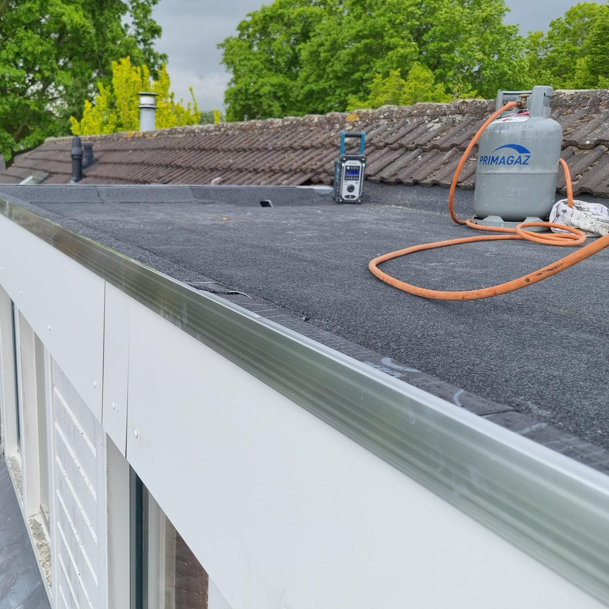
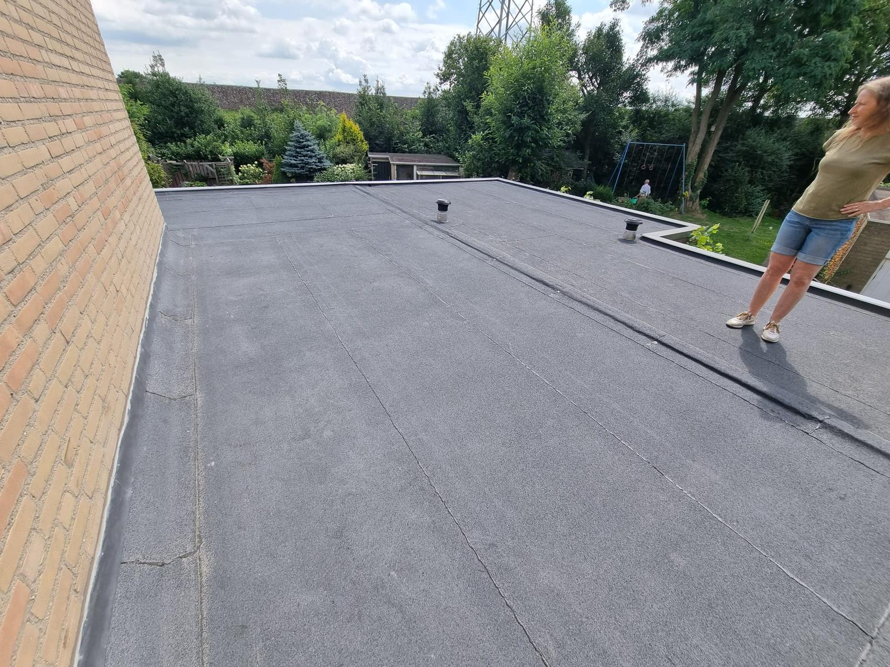
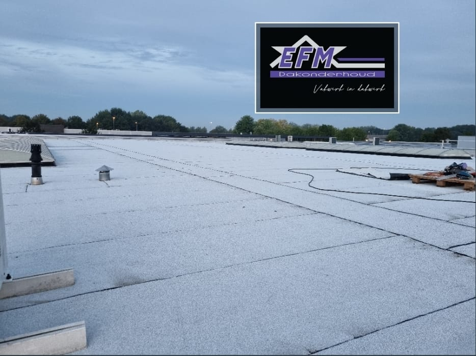

Regelmatig onderhoud verlengt de levensduur van uw dak en bespaart u op de lange termijn veel geld.
Een dak biedt bescherming en regelmatig onderhoud verlengt de levensduur van uw dak. Mos, algen en andere weerelementen brengen schade aan op uw dak. Het is daarom belangrijk om uw dak twee keer per jaar te laten onderhouden. Schoonmaken en de controle op beschadigingen horen bij dakonderhoud. Bij een onderhoudsbeurt worden bovendien kleine reparaties verricht die u op de lange termijn veel geld kunnen schelen.
Verschillende soorten daken hebben verschillend onderhoud nodig. Een daktuin heeft bijvoorbeeld veel meer onderhoud nodig dan een gewoon dak. Een sedumdak heeft daarentegen haast geen onderhoud nodig.
Wij nemen graag de zorg voor het dakonderhoud voor u uit handen. Een dak dat door ons professioneel wordt onderhouden gaat dan ook langer mee. Wij zien eventuele problemen meteen en lossen deze direct op. Het is ook mogelijk om bij ons een zeer voordelig onderhoudscontract af te sluiten waarbij we 2x per jaar uw dak verzorgen.
Sluit een onderhoudscontract af en wij verzorgen 2x per jaar uw dak. Zo heeft u nergens omkijken naar.


Grondige controle op beschadigingen, loskomende randen en verstoppingen van afvoeren.
Verwijderen van mos, algen, bladeren en vuil. Dakgoten en afvoeren worden schoongemaakt.
Kleine beschadigingen worden direct ter plekke gerepareerd zodat grote problemen worden voorkomen.
Neem vrijblijvend contact met ons op voor een onderhoudsbeurt of vraag naar ons voordelige onderhoudscontract.